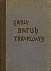
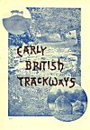
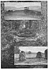

Sacred Texts Legends & Sagas England Index Next
Early British Trackways, Moats, Mounds, Camps, and Sites.
A Lecture given to the Woolhope Naturalists' Field Club, at Hereford, September, 1921, by ALFRED WATKINS, Fellow and Progress Medallist (for 1910), of the Royal Photographic Society; Past President (1919) of the Woolhope Club. With illustrations by the Author, and much added matter.
[1922]
HEREFORD: THE WATKINS METER Co.
LONDON: SIMPKIN, MARSHALL, HAMILTON, KENT & Co., LTD.
Scanned at db-sacred-texts.li/neu, June 2004. This text is in the public domain in the United States. These files may be used for any non-commercial purpose, provided this notice of attribution is left intact.

Click to enlarge
Front Cover
{kind=link}

Click to enlarge
Inner Cover
{kind=link}

Click to enlarge
FRONTISPIECE
{kind=link}
|
1. Castle Tomen, Radnor Forest. 2. A Glade on a Ley. 3. Four Stones, New Radnor. |
![g'.г.Ail maiden ©uмонетი: ℞ubli© ძ'ommAin 🖼 ImageI by 'Art'hur R_AckHÅm' & All inclusive names to my Roots && me, me I.B.M.l. ასლაჼ კლდიაშვილი, А©ЛАჼ ©КЛიДиÅWвიЛи [1922], @novadays ი.ბ. АйбоЛит [Aibolem МЕЛОДИЯR₾ი მო'სი'კვÅჼ]](https://barionleg.github.io/db-sacred-texts.li/neu/ba_geo_f.png) |